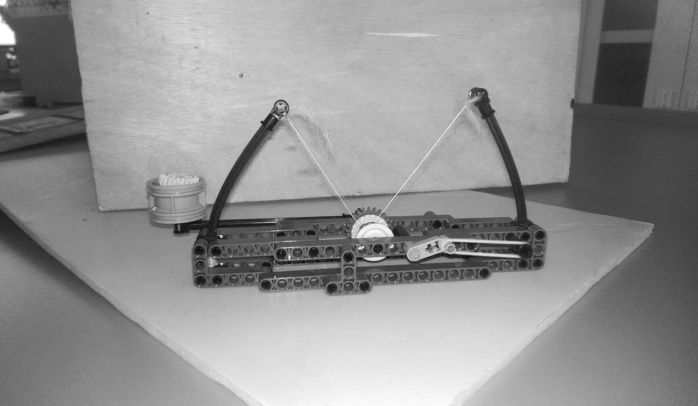

Da Vinci’s Catapult

It was the Dragon Boat Festival of 2009. I was 10. When surfing Internet on my mother’s HTC, I saw a blog written in Chinese (I could only read Chinese then). That blog introduced a made-with-LEGO Da Vinci’s Catapult. I forgot to save the URL, and I could never find it again.
I remenbered the mechanism, and made one out of my LEGO parts. After that, I put the catapult unber my bed, and went back to study coursework. It was there under my bed until 2016 summer, when I digged it out, renewed most components, and took the above picture.
Acknowlegement:
If you find the blog written in Chinese posted before 2009 May, please do let me know.